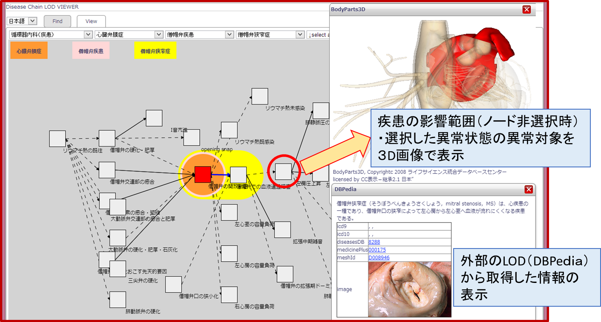

本ページでは「医療情報システムのための医療知識基盤データベース研究開発事業」 で開発された，臨床医学オントロジー CONAND(Clinical Ontology in Anatomaical Structure and Disease) の疾患オントロジーを閲覧するシステム「Disease Compass」を公開しています．
本システムは，臨床医学オントロジー CONANDの疾患オントロジーをLinked Dataに変換したデータセットを基に， 他のデータセットとつなげることで「疾患に関する様々な情報を統合的に閲覧」できるサービスです．
具体的には，以下のような閲覧ができます．
さらに，以下の３つの観点から，疾患に関わる状態の連鎖を閲覧できます．これら３つの閲覧画面は，相互に連携して行き来することができます．
